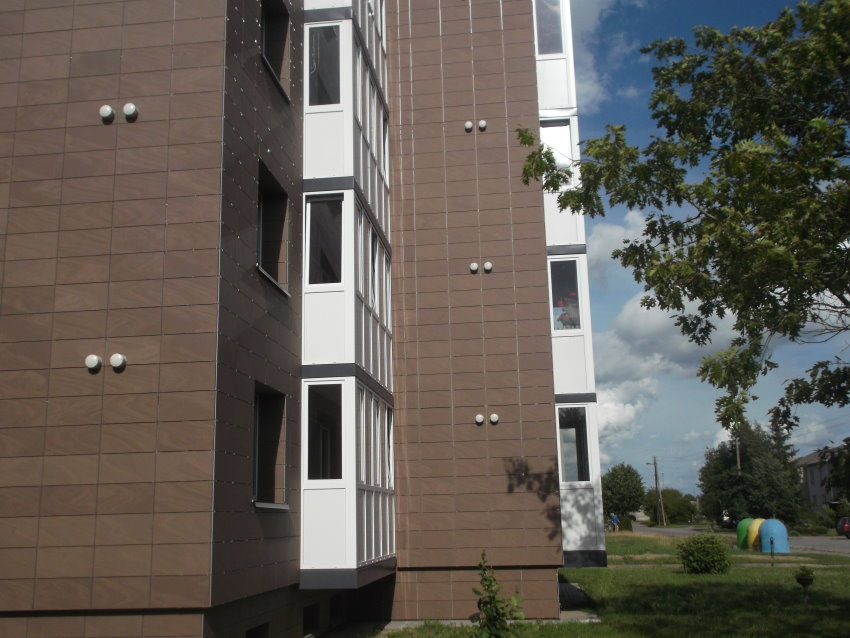

Rekuperatoriai, kaina | rekuperatoriucentras.lt
- Rekuperatoriai, kaina | rekuperatoriucentras.lt
Rekuperatoriai ir minirekuperatoriai (275) Akcijos ir naujienos; Rekuperatoriai (96) Mini rekuperatoriai (18) Geoterminiai šilumokaičiai rekuperatoriai; Rekuperatorius + šilumos siurblys „oras-oras“ (3) Lanksčių ortakių sistemos (82) Priedai (55) Plyšiniai difuzoriai (10) Difuzoriai (7) Įleidžiami, priglaistomi difuzoriai (4) - Rekuperatoriai, rekuperacinės sistemos | namams24.lt
Rekuperatoriai butams gali būti įrengiami pasirinkus iš plataus modelių sąrašo. Pagrindinis buto pertvarkymas būtų tas, kad reikėtų plano, kaip kuo geriau pravesti ortakius. Geri meistrai pasirūpins, kad nuo to nenukentėtų Jūsų buto lubų aukštis. Taip pat Jūs visada galite rinktis ir sieninius rekuperatorius. - Rekuperatoriai | Mini Rekuperatoriai | Gedarta.lt
Rekuperatoriai – tai šilumokaičiai, kuriuose iš kambario išeinantis šildomas oras didžiąją dalį šilumos atiduoda šaltam orui, patenkančiam iš lauko. Tai yra, – išeinantis oras šildo įeinantį. Žiema prisimename šiltas vasaros dienas ir laukiame, kol grįš šiluma. Tačiau mes negalime laukti gamtos malonumų, todėl ... - Rekuperatoriai butui | sildymas-vedinimas.lt
Rekuperatoriai namams, butams ir komercinių patalpų vėdinimui. Rekuperatoriai su rotaciniais, plokšteliniais šilumokaičiais. Įrenginių našumas nuo 50 iki 25 000 m3/h. Mūsų kataloge esantys rekuperatoriai gali ne tik vėdinti bet ir šildyti patalpas (žr. konkretų modelį). - Rekuperatoriai | Orokondicionieriai.pro
Rekuperatoriai – pagrindiniai prietaisai, kurie yra skirti užtikrinti tinkamą vėdinimą ir šilumos išlaikymą. Konsultuokitės tel. +370 670 26670 - Rekuperatoriai | Vilpra.lt: Šiluma Jūsų namams
Domina rekuperatoriai, vėdinimo, kondicionavimo ir šildymo sistemos bei montavimo paslaugos gera kaina? Mes galime padėti! Susisiekite tel. +370 (693) - Rekuperatoriai | Šilumos atgavimo įrenginiai ...
Efektyviai veikiantys mini rekuperatoriai privatiems ir verslo objektams. Skirtingos charakteristikos rekuperacinė įranga, geriausios kainos garantija. - Rekuperatoriai | Šilumos siurblių ir vėdinimo sistemų ...
Rekuperatoriai + Užklausti + Titon Rekuperatorius + Atrea Rekuperatorius + Itho Rekuperatorius + Brofer Rekuperatorius + Brink Rekuperatorius. Siekiame, kad kiekvienas klientas būtų patenkintas atliktų darbų kokybė ... - Beortakiniai rekuperatoriai - HomeAir
Brofer firmos rekuperatoriai pasižymi aukštu šilumos grąžos efektyvumu – iki 90%, energijos efektyvumo klasė A. Šios firmos produktų serijoje rasite ne tik begalo platų asortimentą, bet ir prekes, kurios stebins inovatyviais inžineriniais sprendimais bei savo kokybe.Rekuperatorių galingumas vyrauja nuo 160 m 3 /h iki 470 m 3 /h ... - Rekuperatoriai | Oris.lt - Šildymas, Šaldymas, Vėdinimas
Rekuperatoriai - šiuolaikiškas ir praktiškas sprendimas, reikalaujantis nedidelių investicijų ir tuo pačiu padeda taupyti. Jų sistemos yra yra kelių rūšių.

Registruotis Prisijungimas Prisijungimas Prekių krepšelis Krepšelis tuščias. Viso prekių už 0 00 € Peržiūrėti krepšelį Iki nemokamo pristatymo liko 50 00 € Pristatysime nemokamai! APIE MUS PASLAUGOS DUK NAUDINGA ŽINOTI KONTAKTAI
+370 693 00 544
Vėdinimo sistemos Plokšteliniai rekuperatoriai Rotaciniai rekuperatoriai Mini rekuperatoriai Lanksti ortakių sistema Pūsto polietileno ortakiai ir jungtys Triukšmo slopintuvai Oro skirstytuvai Sklendės Cinkuota ortakių sistema Filtrai Izoliacija Rekuperatorių priedai Kondicionavimo sistemos Sieniniai kondicionieriai Kasetiniai kondicionieriai Multi-split kondicionieriai Mobilūs kondicionieriai Kondicionierių laikikliai Variniai vamzdžiai Šildymo sistemos Šilumos siurbliai oras-oras Šilumos siurbliai oras-vanduo Prekės pigiau Top prekės Vėdinimo sistemos Plokšteliniai rekuperatoriai Rotaciniai rekuperatoriai Mini rekuperatoriai Lanksti ortakių sistema Pūsto polietileno ortakiai ir jungtys Triukšmo slopintuvai Oro skirstytuvai Sklendės Cinkuota ortakių sistema Filtrai Izoliacija Rekuperatorių priedai Kondicionavimo sistemos Sieniniai kondicionieriai Kasetiniai kondicionieriai Multi-split kondicionieriai Mobilūs kondicionieriai Kondicionierių laikikliai Variniai vamzdžiai Šildymo sistemos Šilumos siurbliai oras-oras Šilumos siurbliai oras-vanduo Prekės pigiau Top prekės Plokšteliniai rekuperatoriai Rotaciniai rekuperatoriai Mini rekuperatoriai Lanksti ortakių sistema Oro skirstytuvai Sieniniai oro kondicionieriai Šilumos siurbliai oras-oras
Kas yra rekuperatorius?
Rekuperatorius - vėdinimo įrenginys su šilumos atgavimu (rekuperacija). Rekuperatorius yra vienas efektyviausių ir ekonomiškiausių būdų vėdinti pastatus, nes jis ne tik tiekia šviežią orą į patalpas, bet jį dar išvalo nuo dulkių, žiedadulkių ir vabzdžių. Rekuperatorius taip pat šalina iš patalpų kvapus bei blogą orą jo šilumą panaudodamas pašildyti tiekiamam orui. Pasirinkus efektyvų rekuperatorių nebereikia jokių papildomų energijos šaltinių pašildyti tiekiamam orui, nes šiuolaikiniai modernūs šilumokaičiai sugeba grąžinti iki 95% šilumos. Renkantis rekuperatorių kaina nėra svarbiausias argumentas, nes su žema kaina ar akcija dažniausiai gausite rekuperatorių, kurio eksploatacijos išlaidos gali būti nuo 2 iki 5 kartų didesnės, o kartais ir daugiau, nes jie dėl prasto šilumos grąžinimo koeficiento, šaltuoju periodu, dažnai jungs elektrinį šildytuvą tiekiamam orui pašildyti. Į Lietuvos rinką yra tiekiama nemažai skirtingų gamintojų rekuperatorių, bet reikia suprasti, kad ne visi yra pritaikyti efektyviai dirbti mūsų klimatinėmis sąlygomis. Todėl prieš pasirenkant rekuperatorių, visada siūlome pasikonsultuoti ir sužinoti, kokie yra kitų vartotojų atsiliepimai apie konkretų įrenginį.
Internete galima rasti patarimų kaip pačiam pasidaryti rekuperatorių, arba kitaip tariant „Rekuperatorius savo rankomis“, tačiau reikia suprasti, kad efektyvų rekuperatoriaus darbą užtikrina ne jo šilumokaitis, o automatika, nes būtent automatika suvaldo visus procesus ir užtikrina efektyvų rekuperatoriaus darbą šaltuoju periodu.
Populiariausios prekės
-5 % Lauko stogelis viengubas D160 39 08 € 41 14 € Sutaupykite 2 06 € -10 % Plokštelinis rekuperatorius Renovent Flair 325 Šilumos grąžinimas, % 95Energetinė klasė A+
1950 40 € 2167 11 € Sutaupykite 216 71 € -30 % Rekuperatorius Komfovent Domekt-R-300-V 1621 16 € - 1781 24 € -20 % Mini rekuperatorius MITSUBISHI ELECTRIC VL-100U5-E (valdymas virvele) 379 00 € 473 74 € Sutaupykite 94 74 € 1 - 4 iš 19 Visos populiariausios prekės
PRENUMERUOKITE NAUJIENLAIŠKĮ
GAMINTOJAI
Informacija Apie mus Paslaugos Rekuperatoriaus montavimas Rekuperacinė sistema namui Pirkimo taisyklės Kontaktai Naudinga žinoti Rekuperacinė sistema Skardinių ortakių sistema Lanksčių ortakių sistema Kodėl reikia vėdinimo Efektyvi vėdinimo sistema Aktualijos Populiariausios prekės Prekės pigiau Naujos prekės DUK Elektroninė parduotuvė © 2020 UAB "Rekuperatorių centras". Be UAB "Rekuperatorių centras" sutikimo draudžiama kopijuoti ir platinti svetainėje esančią informaciją. Elektroninių parduotuvių nuoma verskis.lt Į viršų
